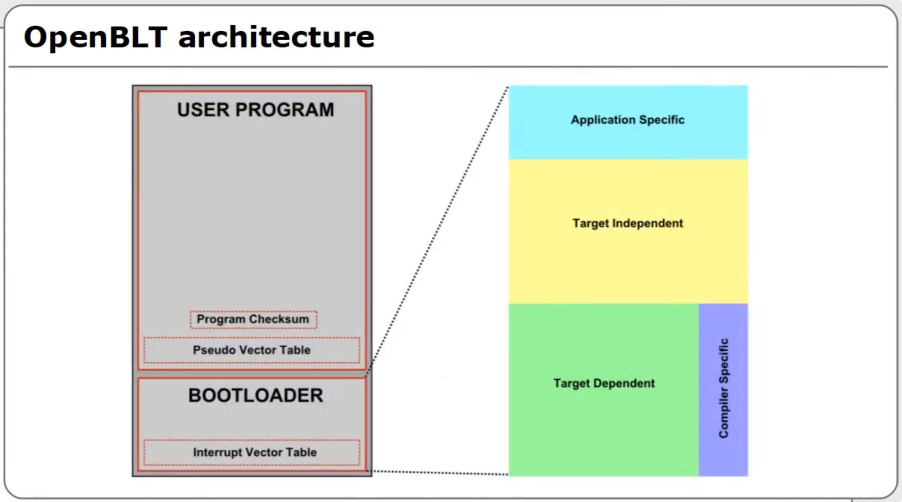
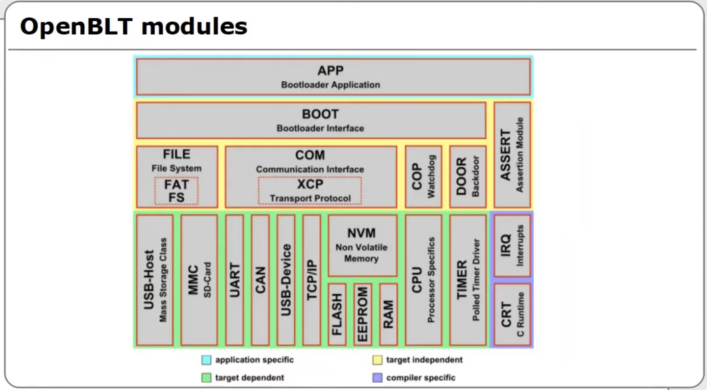
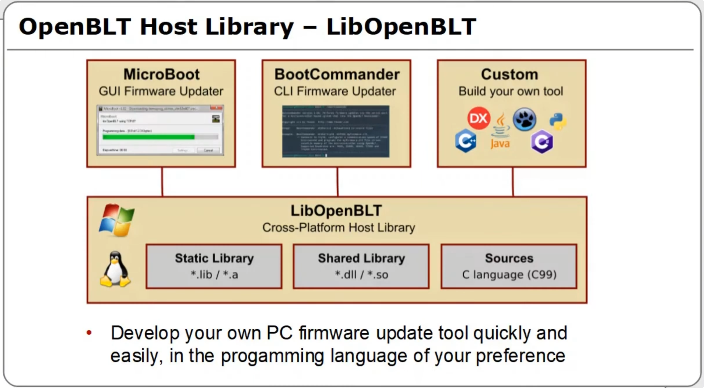

<!DOCTYPE lake>
<p data-lake-id="u5b198eb9" id="u5b198eb9"><span class="lake-fontsize-12" data-lake-id="ucf470648" id="ucf470648">​</span><br/></p><h3 data-lake-id="item-1" id="item-1"><strong><span data-lake-id="u6a4c15e5" id="u6a4c15e5" style="color: rgb(33, 37, 41)">MCUboot</span></strong></h3><p data-lake-id="u65cac096" id="u65cac096"><span class="lake-fontsize-12" data-lake-id="u786beaa6" id="u786beaa6" style="color: rgb(33, 37, 41)">MCUboot 顾名思义，针对 MCU 的 boot，它是一款适用于 32 位微控制器的安全引导加载程序（软件框架）。而且，这款 MCUboot 开源、并遵循 Apache License 2.0 开源协议。</span></p><p data-lake-id="u178773f0" id="u178773f0"><span class="lake-fontsize-12" data-lake-id="uaa84f7f1" id="uaa84f7f1" style="color: rgb(33, 37, 41)">开源地址：</span></p><p data-lake-id="u646aec79" id="u646aec79"><a data-lake-id="u3ac44b03" href="https://github.com/mcu-tools/mcuboot" id="u3ac44b03" rel="noopener noreferrer" target="_blank"><span class="lake-fontsize-12" data-lake-id="u11895492" id="u11895492" style="color: rgb(0, 145, 189)">https://github.com/mcu-tools/mcuboot</span></a></p><p data-lake-id="u553ef059" id="u553ef059"><span class="lake-fontsize-12" data-lake-id="ue40902e1" id="ue40902e1">​</span><br/></p><p data-lake-id="u018027e9" id="u018027e9"><span class="lake-fontsize-12" data-lake-id="u99d6fae3" id="u99d6fae3" style="color: rgb(33, 37, 41)">MCUBoot 是一个开源的、跨平台的 Bootloader，支持多种 ARM Cortex-M 系列单片机。MCUboot  提供了安全的固件更新机制，支持加密和签名验证，适用于物联网设备。它不依赖于任何特定的操作系统和硬件，主要跟芯片的 Flash 结构密切相关。</span></p><p data-lake-id="u14760ad7" id="u14760ad7"><span class="lake-fontsize-12" data-lake-id="u3262d0b1" id="u3262d0b1" style="color: rgb(33, 37, 41)">MCUboot 主要特点：</span></p><ul list="u0762ae07"><li data-lake-id="uecb5021c" fid="u194e073b" id="uecb5021c"><span class="lake-fontsize-12" data-lake-id="ub2b67992" id="ub2b67992" style="color: rgb(33, 37, 41)">完全开源</span></li><li data-lake-id="u7d8967a7" fid="u194e073b" id="u7d8967a7"><span class="lake-fontsize-12" data-lake-id="uc19c35b0" id="uc19c35b0" style="color: rgb(33, 37, 41)">多种升级模式</span></li><li data-lake-id="u9780cb15" fid="u194e073b" id="u9780cb15"><span class="lake-fontsize-12" data-lake-id="u5f093c02" id="u5f093c02" style="color: rgb(33, 37, 41)">对固件安全校验</span></li><li data-lake-id="ue98728e2" fid="u194e073b" id="ue98728e2"><span class="lake-fontsize-12" data-lake-id="ua589e0f3" id="ua589e0f3" style="color: rgb(33, 37, 41)">可异常恢复</span></li></ul><p data-lake-id="u325c4326" id="u325c4326"><span class="lake-fontsize-12" data-lake-id="uf67d53cc" id="uf67d53cc">​</span><br/></p><h3 data-lake-id="item-2" id="item-2"><strong><span data-lake-id="ue25c28cd" id="ue25c28cd" style="color: rgb(33, 37, 41)">OpenBLT</span></strong></h3><p data-lake-id="ub81f9e97" id="ub81f9e97"><span class="lake-fontsize-12" data-lake-id="u83ab63ee" id="u83ab63ee" style="color: rgb(33, 37, 41)">OpenBLT 是一款适用于常见 8 位、16 位、32 位等众多单片机的 Bootloader。</span></p><p data-lake-id="u2c180366" id="u2c180366"><span class="lake-fontsize-12" data-lake-id="u4b301ab5" id="u4b301ab5" style="color: rgb(33, 37, 41)">默认情况下，它支持 RS232、CAN、USB、TCP/IP、Modbus RTU 等单片机常见通信协议。并附带易于使用的 MicroBoot PC 工具，用于启动和监控固件更新。同时，还支持直接从 SD 卡执行固件更新。</span></p><p data-lake-id="uaa4a5345" id="uaa4a5345"><span class="lake-fontsize-12" data-lake-id="uc0687409" id="uc0687409" style="color: rgb(33, 37, 41)">​</span><br/></p><p data-lake-id="u25e1faf4" id="u25e1faf4"><span class="lake-fontsize-12" data-lake-id="ufc653f16" id="ufc653f16" style="color: rgb(51, 51, 51)">OpenBLT is an open source bootloader that can run on any microcontroller and use any type of communication interface to perform software updates, without the need of specialized debugger hardware. Example applications are:</span><span class="lake-fontsize-12" data-lake-id="u6585e133" id="u6585e133" style="color: rgb(51, 51, 51)"><br/></span><span class="lake-fontsize-12" data-lake-id="u8cb41c19" id="u8cb41c19" style="color: rgb(51, 51, 51)">OpenBLT 是一个开源引导加载程序，可以在任何微控制器上运行，并使用任何类型的通信接口进行软件更新，无需专门的调试器硬件。应用实例包括：</span></p><ul list="u3cab9b7d"><li data-lake-id="ue5b3e78b" fid="ua29f8f68" id="ue5b3e78b"><em><span style="color: rgb(51, 51, 51)"><u><span class="lake-fontsize-12" data-lake-id="u4eaa2f64" id="u4eaa2f64">In-field reprogramming</span></u></span></em><span class="lake-fontsize-12" data-lake-id="u74289cc4" id="u74289cc4" style="color: rgb(51, 51, 51)">. After your customer started using your microcontroller based product, it is always possible that a software update needs to be made. For example to enable new features or to resolve an existing problem. With OpenBLT you can easily reprogram the software program, even on location at the customer.</span><span class="lake-fontsize-12" data-lake-id="uad64ef28" id="uad64ef28" style="color: rgb(51, 51, 51)"><br/></span><span class="lake-fontsize-12" data-lake-id="u41a94011" id="u41a94011" style="color: rgb(51, 51, 51)">现场重编程。当您的客户开始使用基于微控制器的产品后，始终有可能需要软件更新。例如，为了启用新功能或解决现有问题。使用 OpenBLT，您可以轻松地重新编程软件程序，甚至可以在客户现场进行。</span></li><li data-lake-id="u3dea983b" fid="ua29f8f68" id="u3dea983b"><em><span style="color: rgb(51, 51, 51)"><u><span class="lake-fontsize-12" data-lake-id="ub1230eed" id="ub1230eed">End of assembly line</span></u></span></em><span class="lake-fontsize-12" data-lake-id="uc5eedd95" id="uc5eedd95" style="color: rgb(51, 51, 51)">. Using OpenBLT it is possible to flash your product's software program at the end of the assembly line, allowing the most up-to-date version to be shipped with your product.</span><span class="lake-fontsize-12" data-lake-id="ua13dc286" id="ua13dc286" style="color: rgb(51, 51, 51)"><br/></span><span class="lake-fontsize-12" data-lake-id="u21818207" id="u21818207" style="color: rgb(51, 51, 51)">装配线末端。使用 OpenBLT，您可以在装配线末端烧录产品的软件程序，使最新版本随产品一起发货。</span></li><li data-lake-id="u633eae40" fid="ua29f8f68" id="u633eae40"><em><span style="color: rgb(51, 51, 51)"><u><span class="lake-fontsize-12" data-lake-id="u7832398e" id="u7832398e">Development stage</span></u></span></em><span class="lake-fontsize-12" data-lake-id="ua47d40d5" id="ua47d40d5" style="color: rgb(51, 51, 51)">. During the development stage of your software program, you frequently reprogram the software program. OpenBLT enables you to do this without the need of special debugger hardware.</span><span class="lake-fontsize-12" data-lake-id="u4ae0ee8f" id="u4ae0ee8f" style="color: rgb(51, 51, 51)"><br/></span><span class="lake-fontsize-12" data-lake-id="uae099a10" id="uae099a10" style="color: rgb(51, 51, 51)">开发阶段。在您的软件程序开发阶段，您经常需要重新编程软件程序。OpenBLT 使您无需专门的调试器硬件即可完成此操作。</span></li><li data-lake-id="uf4fa9cf9" fid="ua29f8f68" id="uf4fa9cf9"><em><span style="color: rgb(51, 51, 51)"><u><span class="lake-fontsize-12" data-lake-id="uca817ad9" id="uca817ad9">Calibration stage</span></u></span></em><span class="lake-fontsize-12" data-lake-id="ua55e4959" id="ua55e4959" style="color: rgb(51, 51, 51)">. While fine-tuning your software program, you optimize parameters of your software program. OpenBTL can be used to quickly reprogram the optimized calibration parameters.</span><span class="lake-fontsize-12" data-lake-id="ubb9abd2b" id="ubb9abd2b" style="color: rgb(51, 51, 51)"><br/></span><span class="lake-fontsize-12" data-lake-id="u18704412" id="u18704412" style="color: rgb(51, 51, 51)">校准阶段。在微调您的软件程序时，您优化软件程序的参数。OpenBTL 可用于快速重新编程优化的校准参数。</span></li><li data-lake-id="uc4e03198" fid="ua29f8f68" id="uc4e03198"><em><span style="color: rgb(51, 51, 51)"><u><span class="lake-fontsize-12" data-lake-id="u294a9343" id="u294a9343">Starter kits</span></u></span></em><span class="lake-fontsize-12" data-lake-id="ud4134dc4" id="ud4134dc4" style="color: rgb(51, 51, 51)">. By preloading the bootloader on a microcontroller starter kit, the end user does not need to purchase an expensive debugger interface. It is also not necessary to include an on-chip debugger on the starter kit board. This lowers the cost price of the starter kit, making it more appealing for the end user.<br/>入门套件。通过在微控制器入门套件上预加载引导加载程序，最终用户无需购买昂贵的调试接口。也不需要在入门套件板上包含片上调试器。这降低了入门套件的成本价格，使其对最终用户更具吸引力</span></li></ul><p data-lake-id="u5c288cc1" id="u5c288cc1"></p><p data-lake-id="u79f12707" id="u79f12707"></p><p data-lake-id="u6977082f" id="u6977082f"></p><p data-lake-id="ua07bdd86" id="ua07bdd86"><span class="lake-fontsize-12" data-lake-id="u286bfc13" id="u286bfc13" style="color: rgb(33, 37, 41)">开源地址：</span></p><p data-lake-id="u75a9e0d2" id="u75a9e0d2"><a data-lake-id="u48cc5118" href="https://github.com/feaser/openblt" id="u48cc5118" rel="noopener noreferrer" target="_blank"><span class="lake-fontsize-12" data-lake-id="u64972328" id="u64972328" style="color: rgb(0, 145, 189)">https://github.com/feaser/openblt</span></a></p><p data-lake-id="ud185e4b9" id="ud185e4b9"><span class="lake-fontsize-12" data-lake-id="u37b94f09" id="u37b94f09">​</span><br/></p><p data-lake-id="u07b84187" id="u07b84187"><span class="lake-fontsize-12" data-lake-id="u991eb3a1" id="u991eb3a1" style="color: rgb(33, 37, 41)">OpenBLT 特点：</span></p><ul list="ue7f7b9db"><li data-lake-id="u1e11617b" fid="ud9558dcf" id="u1e11617b"><span class="lake-fontsize-12" data-lake-id="u8b2d8c69" id="u8b2d8c69" style="color: rgb(33, 37, 41)">开源免费，提供完整源代码</span></li><li data-lake-id="ucae15798" fid="ud9558dcf" id="ucae15798"><span class="lake-fontsize-12" data-lake-id="u5a49c430" id="u5a49c430" style="color: rgb(33, 37, 41)">包括用户友好的 PC 下载实用程序</span></li><li data-lake-id="u5ad1bcab" fid="ud9558dcf" id="u5ad1bcab"><span class="lake-fontsize-12" data-lake-id="u292b3cd5" id="u292b3cd5" style="color: rgb(33, 37, 41)">易于移植到不同的微控制器</span></li><li data-lake-id="u189cb359" fid="ud9558dcf" id="u189cb359"><span class="lake-fontsize-12" data-lake-id="uf457cc56" id="uf457cc56" style="color: rgb(33, 37, 41)">ROM 占用空间小</span></li><li data-lake-id="uab953197" fid="ud9558dcf" id="uab953197"><span class="lake-fontsize-12" data-lake-id="u996064ff" id="u996064ff" style="color: rgb(33, 37, 41)">高度可配置</span></li><li data-lake-id="u4e57b8f7" fid="ud9558dcf" id="u4e57b8f7"><span class="lake-fontsize-12" data-lake-id="u41a59a0f" id="u41a59a0f" style="color: rgb(33, 37, 41)">有序且文档齐全的代码</span></li><li data-lake-id="u488961f4" fid="ud9558dcf" id="u488961f4"><span class="lake-fontsize-12" data-lake-id="ud7b8deda" id="ud7b8deda" style="color: rgb(33, 37, 41)">支持从本地连接的存储（如 SD 卡）进行软件更新</span></li><li data-lake-id="u529e0e9e" fid="ud9558dcf" id="u529e0e9e"><span class="lake-fontsize-12" data-lake-id="u5eb77506" id="u5eb77506" style="color: rgb(33, 37, 41)">可扩展以支持额外的存储器，例如串行 EEPROM 或外部 Flash</span></li><li data-lake-id="u555c885d" fid="ud9558dcf" id="u555c885d"><span class="lake-fontsize-12" data-lake-id="u5eb37241" id="u5eb37241" style="color: rgb(33, 37, 41)">支持常见的通信接口，如 RS232、CAN、TCP/IP、USB 和 Modbus RTU</span></li><li data-lake-id="u928328fb" fid="ud9558dcf" id="u928328fb"><span class="lake-fontsize-12" data-lake-id="ued0457e8" id="ued0457e8" style="color: rgb(33, 37, 41)">可与 STM32、XMC4、XCM1、Tricore、HCS12 和其他基于 ARM Cortex 的微控制器配合使用</span></li></ul><p data-lake-id="u202e58a8" id="u202e58a8"><span class="lake-fontsize-12" data-lake-id="u96beeb95" id="u96beeb95" style="color: rgb(33, 37, 41)">OpenBLT 遵循 GNU GPL V3 开源协议</span></p><p data-lake-id="u5bae3cc7" id="u5bae3cc7"><span class="lake-fontsize-12" data-lake-id="u65d61320" id="u65d61320">​</span><br/></p><p data-lake-id="u78d70f36" id="u78d70f36"><span class="lake-fontsize-12" data-lake-id="u3cfae840" id="u3cfae840" style="color: rgb(33, 37, 41)">官方给了一个 OpenBLT 的介绍视频: </span><a data-lake-id="u55b5e1d4" href="https://www.youtube.com/watch?v=6ziHNDithgY" id="u55b5e1d4" rel="noopener noreferrer" target="_blank"><span class="lake-fontsize-12" data-lake-id="u5f7b9565" id="u5f7b9565">https://www.youtube.com/watch?v=6ziHNDithgY</span></a></p><p data-lake-id="u7b11bbad" id="u7b11bbad"><span class="lake-fontsize-12" data-lake-id="ub3bcc67f" id="ub3bcc67f">​</span><br/></p><h3 data-lake-id="item-4" id="item-4"><span data-lake-id="uec65e8f5" id="uec65e8f5" style="color: rgb(33, 37, 41)">wolfBoot</span></h3><p data-lake-id="u53073015" id="u53073015"><span class="lake-fontsize-12" data-lake-id="u1cc72e0a" id="u1cc72e0a" style="color: rgb(33, 37, 41)">wolfBoot 是一款开源的、轻量级的安全 Bootloader，它是完全独立的应用程序，适用于 32 位 MCU 操作系统或裸机项目。</span></p><p data-lake-id="u66a357e2" id="u66a357e2"><span class="lake-fontsize-12" data-lake-id="u2be5b2ee" id="u2be5b2ee" style="color: rgb(33, 37, 41)">开源地址：</span></p><p data-lake-id="u15783aaf" id="u15783aaf"><a data-lake-id="uca0e38af" href="https://github.com/wolfSSL/wolfBoot" id="uca0e38af" rel="noopener noreferrer" target="_blank"><span class="lake-fontsize-12" data-lake-id="ua64c2e29" id="ua64c2e29" style="color: rgb(0, 145, 189)">https://github.com/wolfSSL/wolfBoot</span></a></p><p data-lake-id="ub17ab09b" id="ub17ab09b"><span class="lake-fontsize-12" data-lake-id="ua3713906" id="ua3713906">​</span><br/></p><p data-lake-id="udf9eeb4a" id="udf9eeb4a"><span class="lake-fontsize-12" data-lake-id="u96a5d8dc" id="u96a5d8dc" style="color: rgb(33, 37, 41)">该 bootloader 由以下组件组成：</span></p><ul list="u6db997eb"><li data-lake-id="ude5ffdf8" fid="ud6114139" id="ude5ffdf8"><span class="lake-fontsize-12" data-lake-id="u4d339f5e" id="u4d339f5e" style="color: rgb(33, 37, 41)">wolfCrypt，用于验证镜像的签名</span></li><li data-lake-id="ua140cee8" fid="ud6114139" id="ua140cee8"><span class="lake-fontsize-12" data-lake-id="ufd665b29" id="ufd665b29" style="color: rgb(33, 37, 41)">一个极简的硬件抽象层，为支持的目标提供了实现，该目标负责特定 MCU 上的 IAP 闪存访问和时钟设置</span></li><li data-lake-id="u8cdfaf7a" fid="ud6114139" id="u8cdfaf7a"><span class="lake-fontsize-12" data-lake-id="u4eb1299d" id="u4eb1299d" style="color: rgb(33, 37, 41)">核心引导加载程序</span></li><li data-lake-id="ub77e0171" fid="ud6114139" id="ub77e0171"><span class="lake-fontsize-12" data-lake-id="u4b2aff3a" id="u4b2aff3a" style="color: rgb(33, 37, 41)">应用程序用于与引导加载程序 osrc/libwolfboot.c 交互的小型应用程序库</span></li></ul><p data-lake-id="u91532fca" id="u91532fca"><span class="lake-fontsize-12" data-lake-id="ued4a3a85" id="ued4a3a85" style="color: rgb(33, 37, 41)">这款程序也是号称安全的 Bootloader，没有动态内存分配机制，也没有链接到除 wolfCrypt 之外的任何标准 C 库</span></p>